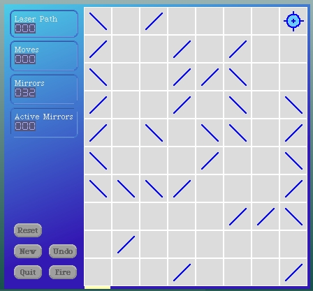
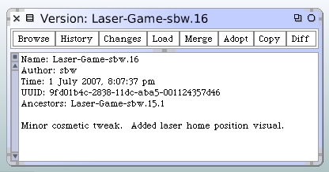

Showing Laser Home Visually
Here's another minor enhancement. Let's show a visual cue for the location of the laser home.
We're going to add a new instance method and modify another on the LaserGame class. Add this method.
makeLaserHomeMorph
| form |
form := Form
extent: CellRenderer cellExtent x @ self gameMargin
depth: self boardForm depth.
form fillColor: LaserGameColors laserBeamSplatterColor.
^SketchMorph withForm: form
The next method is modified to include the new morph.
setupMorphs
self layoutPolicy: ProportionalLayout new.
self setWindowColors.
self
addMorph: self makeControlPanelMorph
fullFrame: (LayoutFrame
fractions: (0 @ 0 corner: 0 @ 1)
offsets: (self gameMargin @ self gameMargin
corner: (self gameMargin + self panelWidth) @ self gameMargin negated)).
self
addMorph: self makeGameBoardMorph
fullFrame: (LayoutFrame
fractions: (0 @ 0 corner: 1 @ 1)
offsets: ((self gameMargin + self panelWidth) @ self gameMargin
corner: self gameMargin negated @ self gameMargin negated)).
self
addMorph: self makeLaserHomeMorph
fullFrame: (LayoutFrame
fractions: (0 @ 1 corner: 0 @ 1)
offsets: ((self gameMargin + self panelWidth + 1)@(self gameMargin negated)
corner: (self gameMargin + self panelWidth + CellRenderer cellExtent x - 2)@0)).
Open up a new LaserGame morph to see how it works.
Now. Even though we didn't change a single piece of model code, our new standard procedure is to run the unit tests before we version and release. So we run the unit tests and as expected everything still passes.
Save the package as version 16. There were no changes to the test package so it does not need to be re-saved.
